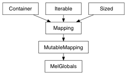

A dictionary-like class for getting and setting global variables between mel and python. an instance of the class is created by default in the pymel namespace as melGlobals.
to retrieve existing global variables, just use the name as a key
>>> melGlobals['gResourceFileList']
[u'defaultRunTimeCommands.res.mel', u'localizedPanelLabel.res.mel', ...]
>>> # works with or without $
>>> melGlobals['gFilterUIDefaultAttributeFilterList']
[u'DefaultHiddenAttributesFilter', u'animCurveFilter', ..., u'publishedFilter']
creating new variables requires the use of the initVar function to specify the type
>>> melGlobals.initVar( 'string', 'gMyStrVar' )
'$gMyStrVar'
>>> melGlobals['gMyStrVar'] = 'fooey'
The variable will now be accessible within MEL as a global string.
get a MEL global variable. If the type is not specified, the mel whatIs command will be used to determine it.
list all global variables
set a mel global variable